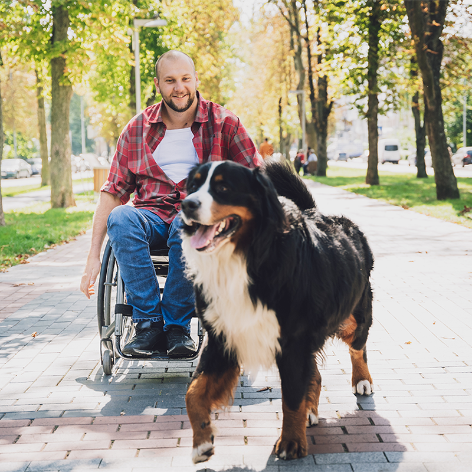

Giving Twin Cities Pets a Second Chance
Our Mission
Twin Cities Animal Rescue is a community nonprofit dedicated to helping animals in need find safe, caring homes. We connect pets with adopters, foster families, volunteers, donors, and community partners.
Meet an Adoptable Pet

Every pet deserves safety, compassion, and the chance to become part of a loving home.
Our Impact
- More than 250 animals supported each year.
- Over 100 volunteers help with rescue activities and events.
- Dozens of foster homes provide temporary care for pets in need.
How You Can Help
You can make a difference by adopting a pet, fostering an animal, volunteering your time, donating supplies, or becoming a community partner.
Featured Rescue Story

The right match can change two lives. Our rescue community helps pets and people build lasting connections.